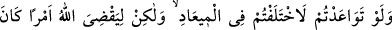
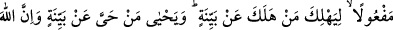
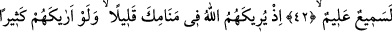
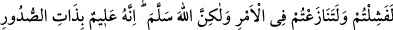
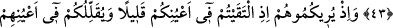
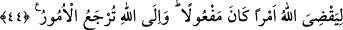
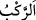
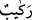

BEDİR’DE İKİ ORDU
KARŞI KARŞIYA
42. O gün siz vâdinin yakın kenarındaydınız, onlar da uzak kenarındaydılar.
Kervan ise sizden daha aşağıdaydı. Eğer sözleşmiş olsaydınız, sözleştiğiniz vakit
hususunda ihtilafa düşerdiniz. Fakat Allah, yapılması gereken bir işi yerine
getirmek için (böyle yaptı ki), helak olan açık bir delille helak olsun ve yaşayan da
açık bir delille yaşasın. Çünkü Allah hakkıyla işitici ve bilicidir.
43. Hani Allah uykunda sana onları az gösterdi. Eğer onları sana çok gösterseydi,
elbette çekinecek ve iş hakkında çekişecektiniz. Fakat Allah (sizi bundan)
kurtardı. Çünkü O, kalblerin özünü bilir.
44. Allah yapılması gereken bir işi yerine getirmek için karşılaştığınız zaman
onları sizin gözlerinizde az gösteriyor, sizi de onların gözlerinde azaltıyordu. Bütün
işler dönüp Allah’a varır.
“O gün siz vâdinin yakın kenarındaydınız,” vâdinin Medîne’ye yakın tarafında
konaklamıştınız, “onlar da” yani düşmanlarınız da “uzak kenarındaydılar.” vâdinin
Medîne’ye uzak olan ve Mekke yönüne düşen yakasına konaklamışlardı.
Âyette vâdinin kıyısı “udve” diye isimlendirilmiştir. Çünkü vâdinin kenarları suyunun
taşmasına mâni olur.
“Kervan ise sizden daha aşağıdaydı.” yani sizin bulunduğunuz mekandan daha
aşağıda deniz sahiline yakın bir yerde bulunuyordu. Onlarla müslümanlar arasında üç
millik bir mesafe vardı.
Aslında “
” kelimesi, “
” süvari kelimesinin çoğuludur. Özellikle deve
binicisi için kullanılır. Burada ise Şam’dan Mekke’ye gelmekte olan kafile ya da
kafileyi sevkeden Ebû Süfyan ve arkadaşları kastedilmişlerdir. Kafiledekilerin hepsi